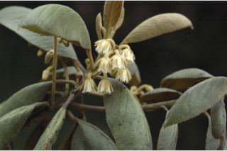
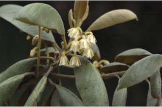

Botanical descriptions:
ಸಸ್ಯದ ವೈಜ್ಞಾನಿಕ ವಿವರ:
Botanical descriptions:
மரங்களின் பண்புகள்:
Habit:
ಪ್ರಕೃತಿ :
Habit:
வளரியல்பு:
Trees up to 12 m tall.
12 ಮೀ. ಎತ್ತರದವರೆವಿಗೆ ಬೆಳೆಯುವ ಮರಗಳು
12 മീറ്റര് വരെ ഉയരത്തില് വളരുന്ന മരങ്ങള്.
மரம் 12 மீ. உயரம் வரை வளரக்கூடியது
Trunk & Bark:
ಕಾಂಡ ಮತ್ತು ತೊಗಟೆ:
Trunk & Bark:
தண்டு மற்றும் மரப்பட்டை:
Bark greyish brown, lenticellate; blaze cream.
ತೊಗಟೆ ಬೂದು ಮಿಶ್ರಿತ ಕಂದುಬಣ್ಣದಲ್ಲಿದ್ದು ವಾಯುವಿನಿಮಯ ಬೆಂಡು ರಂಧ್ರಗಳ ಸಮೇತವಿರುತ್ತವೆ; ಕಚ್ಚು ಮಾಡಿದ ಜಾಗ ಕೆನೆ ಬಣ್ಣದಲ್ಲಿರುತ್ತದೆ.
ശ്വസനരന്ധ്രങ്ങളുളള, നരച്ച തവിട്ട് നിറത്തിലുളള പുറംതൊലി; വെട്ട്പാടിന് ക്രീം നിറം.
மரத்தின் பட்டை பழுப்பு கலந்த ப்ரவுன் நிறம், லெண்டிசெல்லேட்லேட்; உள்பட்டை கிரீம் நிறமுடையது
Branches and Branchlets:
ಕವಲುಗಳು ಮತ್ತು ಕಿರುಕೊಂಬೆಗಳು:
Branches and Branchlets:
கிளைகள் & சிறிய நுனிக்கிளைகள்:
Branches with architecture of “Aubreville_model”; branchlets terete with fallen leaf scars, lenticellate, rusty or greyish stellate tomentose.
ಕವಲುಗಳು “ಆಬ್ರೆವಿಲ್ಲೆ “ ಮಾದರಿಯಲ್ಲಿರುತ್ತವೆ;ಕಿರುಕೊಂಬೆಗಳು ದುಂಡಾಗಿದ್ದು ಎಲೆಉದುರಿದ ಗುರುತು ಸಮೇತವಿದ್ದು. ವಾಯುವಿನಿಮಯ ಬೆಂಡು ರಂಧ್ರಗಳನ್ನು ಹೊಂದಿರುವುದಲ್ಲದೆ ತುಕ್ಕು ವರ್ಣದ ಅಥವಾ ಬೂದು ಬಣ್ಣದ ನಕ್ಷತ್ರ-ಮೃದುತುಪ್ಪಳದಿಂದ ಕೂಡಿರುತ್ತವೆ.
ഓബ്രിവില്ലെ മാതൃകയില് ക്രമീകരിച്ചിരിക്കുന്ന ശാഖകള്; തുരുമ്പിച്ചതോ നരച്ചനിറത്തിലുളളതോ ആയ നക്ഷത്രാകാര രോമങ്ങള് നിറഞ്ഞതും, ശ്വസനരന്ധ്രങ്ങളുള്ളതും, ഇലപൊഴിഞ്ഞ അടയാളങ്ങളുളളതുമായ, ഉരുണ്ട ഉപശാഖകള്.
கிளைகள் “ஆப்ரவில் மாதிரி” முறையில் கிளைக்கும், சிறுநுனிக்கிளைகள் வளையமானது, மற்றும் இலைகள் விழுந்ததால் ஏற்படும் வடு கொண்டது, லெண்டிசெல்லேட்லேட், பொன் நிறமான அல்லது பழுப்பு நிறமுடைய நட்சத்திர வடிவ உரோமங்களுடையது.
Leaves:
ಎಲೆಗಳು:
Leaves:
இலைகள்:
Leaves simple, alternate, spiral, clustered at twig ends; petiole 2.5 cm; lamina 7.5-10 x 5-7.5 cm, elliptic, folded boat-shaped, apex acute to shortly acuminate, base acute, with very shallow serrations, margin revolute, coriaceous, densely tomentose beneath; midrib slightly raised above; secondary_nerves ca. 9 pairs, branched towards margin; tertiary_nerves reticulo-percurrent.
ಎಲೆಗಳು ಸರಳವಾಗಿದ್ದು,ಪರ್ಯಾಯ ಮತ್ತು ಸುತ್ತು ಜೋಡನಾ ಮಾದರಿಯಲ್ಲಿದ್ದು ಕುಡಿಕೊಂಬೆಗಳ ತುದಿಯಲ್ಲಿ ಗುಂಪಾಗಿರುತ್ತವೆ;ತೊಟ್ಟುಗಳು 2.5 ಸೆಂ.ಮೀ. ಉದ್ದವಿರುತ್ತವೆ ; ಪತ್ರಗಳು 7.5 – 10 X 5 – 7.5 ಸೆಂ. ಮೀ. ಗಾತ್ರ, ಅಂಡವೃತ್ತಾಕೃತಿಯಿಂದಿಡಿದು ಮಡಚಿದ ದೋಣಿಯನ್ನು ಹೋಲುವ ಆಕಾರ, ಚೂಪಾದುದರಿಂದ ಹಿಡಿದು ಕಿರು ಉದ್ದ ಹೊಂದಿದ ಕ್ರಮೇಣ ಚೂಪಾಗುವ ಮಾದರಿಯ ತುದಿ, ಚೂಪಾದ ಬುಡ , ಆಳವಿಲ್ಲದ ಹಲ್ಲುಗಳನ್ನುಳ್ಳ ಹಿಂಸುರುಳಿಗೊಂಡ ಅಂಚಿನ ಸಮೇತವಿದ್ದು ,ಕಾಗದವನ್ನೋಲುವ ಮೇಲ್ಮೈ ಹೊಂದಿರುತ್ತವೆ; ಪತ್ರದ ತಳಭಾಗ ದಟ್ಟವಾದ ಮೃದುತುಪ್ಪಳದಿಂದ ಕೂಡಿರುತ್ತದೆ; ಮಧ್ಯ ನಾಳ ಪತ್ರದ ಮೇಲ್ಭಾಗದಲ್ಲಿ ಕೊಂಚ ಉಬ್ಬಿರುತ್ತದೆ; ಎರಡನೇ ದರ್ಜೆಯ ನಾಳಗಳು ಅಂದಾಜು 9 ಜೋಡಿಗಳಿದ್ದು ಅಂಚಿನ ಕಡೆಗೆ ಕವಲೊಡೆಯುತ್ತವೆ; ಮೂರನೇ ದರ್ಜೆಯ ನಾಳಗಳು ಜಾಲಬಂಧ ನಾಳ ವಿನ್ಯಾಸದಲ್ಲಿದ್ದು ಎಲೆ ದಿಂಡಿಗೆ ಅಡ್ಡವಾಗಿ ಕೂಡುವಂತಹವು;
ലഘുവായ ഇലകള്, ഏകാന്തരക്രമത്തില്, സര്പ്പിളമായി, തണ്ടിന്റെ അറ്റത്തായി ക്രമീകരിച്ചിരിക്കുന്നു; ഇലഞെട്ടിന് 2.5 സെ.മീ നീളം; പത്രഫലകത്തിന് 7.5 സെ.മീ മുതല് 10 സെ.മീ വരെ നീളവും 5 സെ.മീ മുതല് 7.5 സെ.മീ വരെ വീതിയും, ദീര്ഘവൃത്താകാരവും, തോണിയാകൃതിയില് മടങ്ങിയിരിക്കുന്നതുമാണ്, പത്രാഗ്രം നിശിതംതൊട്ട് ചെറുവാലോട് കൂടിയതാവാം, ലഘുദന്തുരങ്ങളുളള പത്രാധാരം നിശിതമാണ്, അരികുകള് അകത്തോട്ട് മടങ്ങിയതാണ്, ചര്മ്മില പ്രകൃതം, കീഴ്ഭാഗം കനത്തില് രോമാവൃതമാണ്, മുഖ്യസിര മുകളില് ചെറുതായി ഉയര്ന്നതാണ്; അരികുകള്ക്കടുത്ത് ശാഖിതമായ ഏതാണ്ട് 9 ജോഡി ദ്വിതീയ ഞരമ്പുകള്; ത്രിതീയ ഞരമ്പുകള് ജാലിത-പെര്കറന്റ് വിധത്തിലാണ്.
இலைகள் தனித்தவை, மாற்றுஅடுக்கமானவை, சுழல் போன்ற அமைப்பு, சிறுகிளைகளின் நுனியில் இலைகள் கூட்டமாக மற்றும் நெருக்கமாக காணப்படும்; இலைக்காம்பு 2.5 செ.மீ; இலை அலகு 7.5-10 X 5-7.5 செ.மீ., நீள்வட்டம், படகு வடிவம் கொண்டது, அலகின் நுனி கூரியது முதல் சிறிய வால் போன்று நீண்டது, அலகின் தளம் கூரியது, அலகின் விளிம்பு ரம்ப பற்களுடையது, மற்றும் பின்புறம் வளைந்து (ரெவலுட்) காணப்படும், கோரியேசியஸ், கீழ்பரப்பில் அடர்ந்த மென்மையான உரோமங்களுடையது; மையநரம்பு மேற்புறத்தில் அலகின் பரப்பைவிட சற்று உயர்ந்து இருக்கும்; இரண்டாம் நிலை நரம்புகள் 9 ஜோடிகள், விளிம்பை நோக்கி நரம்புகள் கிளைத்தது; மூன்றாம் நிலை நரம்புகள் வலைப்பின்னல் பெர்க்கரண்ட்.
Inflorescence / Flower:
ಪುಷ್ಪಮಂಜರಿ/ಹೂಗಳು:
Inflorescence / Flower:
மஞ்சரி / மலர்கள்:
Inflorescence racemes, 5-10 cm long, ca. 10 flowered; pedicels 2 cm long, tomentose; petals cream, laciniate; anthers awned.
ಪುಷ್ಪಮಂಜರಿ 5-10 ಸೆಂ.ಮೀ.ಉದ್ದವಿದ್ದು ,ಅಂದಾಜು 10 ಹೂಗಳುಳ್ಳ ಮದ್ಯಾಭಿಸರ ಮಾದರಿಯವು;ಹೂತೊಟ್ಟುಗಳು 2 ಸೆಂ.ಮೀ. ಉದ್ದವಿದ್ದು,ದಟ್ಟ ಮೃದು ತುಪ್ಪಳದಿಂದ ಕೂಡಿರುತ್ತವೆ;ಪುಷ್ಪದಳಗಳು ಕೆನೆ ಬಣ್ಣಹೊಂದಿದ್ದು,ಆಳವಾದ ಸೀಳಿಕೆಗಳ ಸಮೇತವಿರುತ್ತವೆ.;ಪರಾಗಾಶಯ ಊಬುಗಳ ಸಹಿತವಿರುತ್ತವೆ.
ഏതാണ്ട് 10 പൂക്കളുളള, 5 മുതല് 10 സെ.മീ നീളമുളള റസീം പൂങ്കുലകളാണ്; കനത്ത രോമിലമായ പൂഞെട്ടുകള്ക്ക് 2 സെ.മീ നീളം; ഏറെ വിഭജിതമായ, ക്രീം നിറത്തിലുളള ദളങ്ങള്; കൊക്കോടു കൂടിയ കേസരങ്ങള്.
ரெசீம் மஞ்சரி, 5-10 செ.மீ. நீளமானது, தோராயமாக 10 மலர்களுடையது; மலர்காம்பு 2 செ.மீ. நீளமானது, அடர்ந்த மென்உரோமங்களுடையது; அல்லி இதழ் கிரீம் நிறமுடையது, விளிம்பு பிரிந்தவை; மகரந்தபை நுனியில் நீண்ட நீட்சியுடையது (ஆன்டு).
Fruit and Seed:
ಕಾಯಿ /ಬೀಜ:
Fruit and Seed:
கனி / விதை:
Drupe, ovoid, fleshy, green, 1.8 x 1 cm; seed 1, oblong, endocarp stony, tuberculate.
ಡ್ರೂಪ್ಗಳು ಅಂಡಾಕಾರದಲ್ಲಿದ್ದು ,ಹಸಿರು ಬಣ್ಣದವುಗಳಾಗಿದ್ದು 1.8X 1 ಸೆಂ ಮೀ. ಗಾತ್ರಹೊಂದಿದ್ದು ಮಾಂಸಲವಾಗಿರುತ್ತವೆ;ಬೀಜ ಒಂದಿದ್ದು ಚತುರಸ್ರಾಕಾರದಲ್ಲಿರುತ್ತದೆ; ಒಳಾವರಣ ಗಟ್ಟಿಯಾಗಿದ್ದು ಗುಬುಟುಗಳ ಸಮೇತವಿರುತ್ತವೆ.
കായ, 1 സെ.മീ നീളവും 1 സെ.മീ വീതിയുമുളള, പച്ചനിറത്തിലുളള, മാംസളമായ, അണ്ഡാകാര ഡ്രൂപ്പ് ആണ്; ചെറുമുഴപ്പുകളുളള, കടുത്ത എന്ഡോകാര്പ് ഉളള ആയതാകാരത്തിലുളള ഒറ്റ വിത്തുമാത്രം.
உள்ளோட்டுத்தசைகனி (ட்ரூப்), முட்டை வடிவமுடையது, சதைப்பற்றுள்ளது, பச்சை நிறமுடையது, 1-8 X 1 செ.மீ.; ஒரு விதை கொண்டது, கனியின் உட்புறச்சுவர் (என்டோகார்ப்) கடினமானது, கழலைகளுடையது.
Literatures:
ಗ್ರಂಥ ಸೂಚಿ:
Literatures:
சான்று ஏடு:
Gard. Bull. Straits Settl. 10: 319, 325. 1939; Gamble, Fl. Madras 1: 124. 1997 (re. ed); Sasidharan, Biodiversity documentation for Kerala- Flowering Plants, part 6: 64. 2004.
Gard. Bull. Straits Settl. 10: 3199,325.1939;Gamble, Fl.Madras 1: 124.1997(rep.ed.);Sasidharan, Biodiversity documentation for Kerala- Flowering Plants,part 6, 64.2004: Saldanha, Fl. Karnataka 1:212. 1996.
Gard. Bull. Straits Settl. 10: 319, 325. 1939; Gamble, Fl. Madras 1: 124. 1997 (re. ed); Sasidharan, Biodiversity documentation for Kerala- Flowering Plants, part 6: 64. 2004.
Gard. Bull. Straits Settl. 10: 319, 325. 1939; Gamble, Fl. Madras 1: 124. 1997 (re. ed); Sasidharan, Biodiversity documentation for Kerala- Flowering Plants, part 6: 64. 2004.


 
